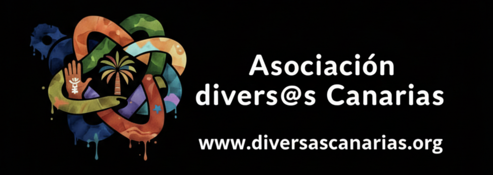
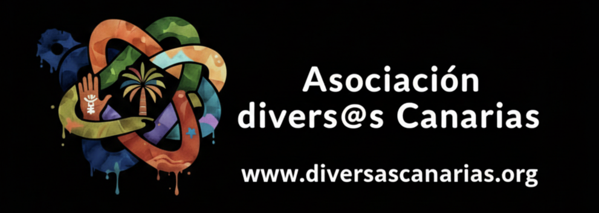

Nuestra Razón de Ser
🧭 Nuestra Misión
Nuestra misión es acompañar a hombres gais, bisexuales, otros hombres que tienen sexo con hombres (GBHSH) y a cualquier persona de la comunidad LGTBQ+ que practique el chemsex.
Lo hacemos creando espacios de confianza digitales, seguros y libres de juicio en las plataformas que ya utilizan. Ofrecemos información veraz y accesible sobre reducción de daños, salud sexual y salud mental, con el objetivo de reducir el aislamiento, derribar el estigma y empoderar al usuario para que tome decisiones informadas sobre su bienestar y su placer.
🔭 Nuestra Visión
Aspiramos a una comunidad LGTBQ+ donde el chemsex y el uso de sustancias en contextos sexuales puedan abordarse abiertamente, sin estigma ni culpa.
Nuestra visión es un futuro en el que cada individuo tenga acceso inmediato a información de calidad sobre reducción de riesgos y a una red de apoyo comunitario y profesional que valide sus experiencias. Soñamos con un entorno donde la salud (física, mental y sexual) sea una prioridad accesible para todos, y nadie tenga que enfrentar la soledad o la desinformación en momentos de vulnerabilidad.
❤️ Nuestros Valores
- Reducción de Daños y Riesgos Creemos en conocer al usuario "donde está". No imponemos la abstinencia como única meta. Proporcionamos herramientas prácticas para gestionar el consumo, minimizar riesgos (como el slamming o las mezclas peligrosas) y aumentar el placer de forma más segura.
- Libre de Juicio (Non-Judgmental) No estamos aquí para juzgar, moralizar o patologizar. Escuchamos, validamos y ofrecemos información. Entendemos que el chemsex está vinculado a la búsqueda de placer, conexión, intimidad o la gestión de emociones difíciles.
- Afirmación LGTBQ+ Entendemos el chemsex como un fenómeno intrínsecamente ligado a la cultura sexual gay y LGTBQ+. Comprendemos el impacto del "estrés de las minorías", la homofobia interiorizada y el estigma (como la serofobia) como factores que pueden influir en el consumo.
- Confidencialidad y Seguridad La confianza es la base de nuestro proyecto. Garantizamos un entorno digital seguro donde las conversaciones son confidenciales. Somos conscientes de los riesgos legales y sociales asociados al consumo de sustancias y protegemos la identidad de nuestros usuarios.
- Base en la Evidencia La información que proporcionamos no se basa en opiniones, sino en la evidencia científica y la experiencia clínica. Utilizamos guías y documentos técnicos de referencia para asegurar que nuestros consejos sobre sustancias, interacciones (incluyendo TAR) y salud mental sean precisos y actualizados.
- Empatía y Acompañamiento No eres un "caso", eres una persona. Usamos la entrevista motivacional como herramienta clave. Estamos aquí para escuchar y ayudarte a encontrar tus propias razones para el cambio, sea cual sea el cambio que decidas hacer.